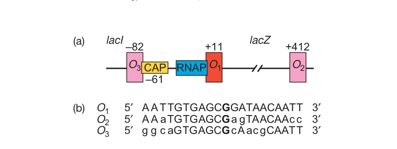
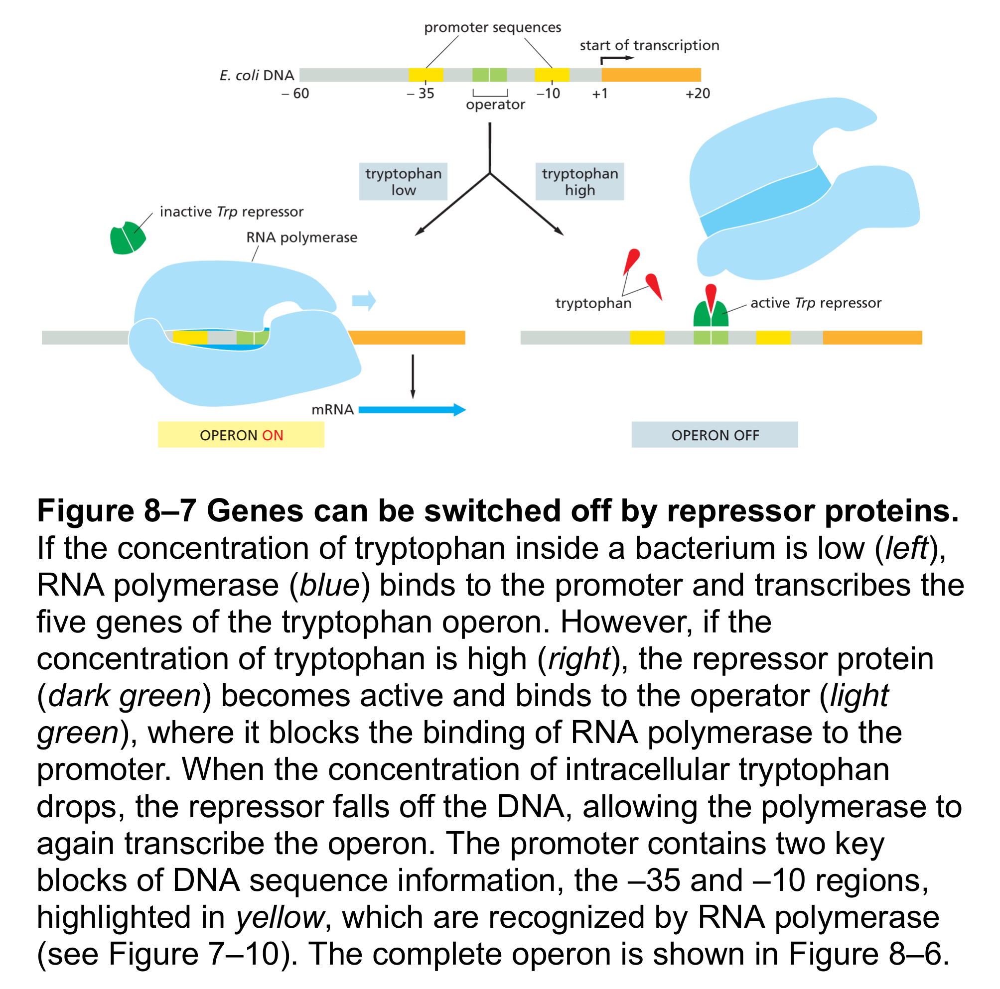
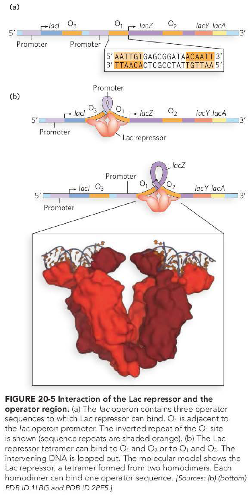
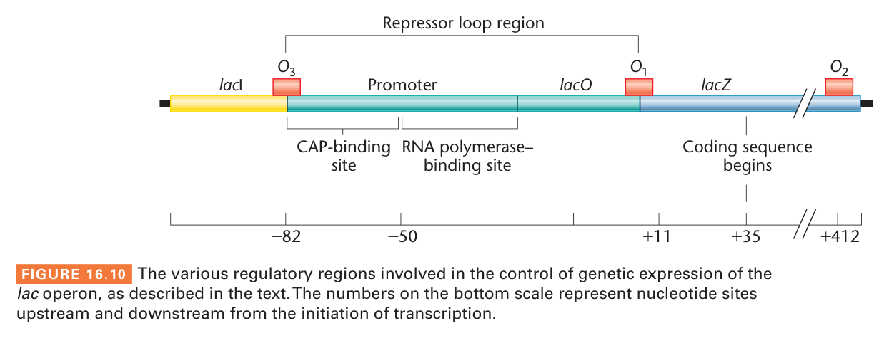
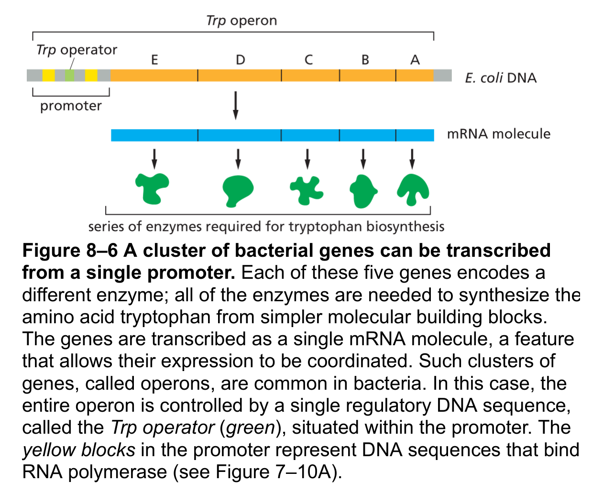
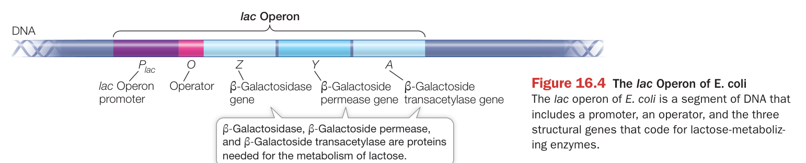
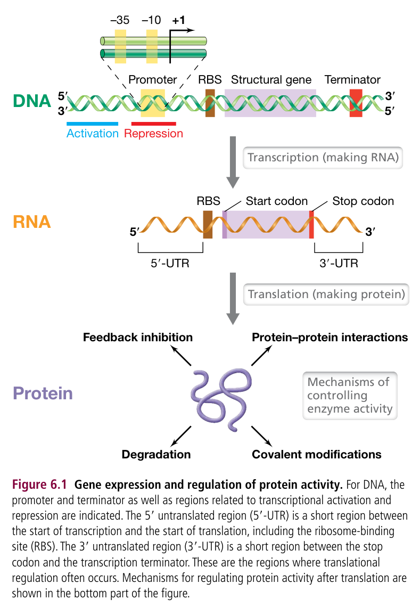

操作子會不會被轉錄與轉譯產生蛋白質？
一次解開「調節基因、結構基因」為何叫「基因」，而「啟動子、操作子」卻叫「子」——從高中核心觀念到乳糖（lac）與色胺酸（trp）操縱組的鹼基座標真相。
操作子（operator）不會轉譯產生蛋白質。它只是一段留在 DNA 上供抑制蛋白結合的調控序列，真正負責製造抑制蛋白的是位在操縱組外的「調節基因」。至於「會不會被轉錄進 mRNA」，則取決於操作子相對於轉錄起始點（+1）的位置。
結尾叫「基因」（調節基因、結構基因）＝會轉錄並轉譯出蛋白質；結尾叫「子」（啟動子、操作子、終止子）＝DNA 上的調控序列／結合位點，本身不編碼蛋白質。
從高中七版課本到大學分生正典完全一致：操作子不是編碼抑制蛋白的基因；抑制蛋白由擁有自身啟動子的調節基因（如 lacI、trpR）獨立表現。
在色胺酸（trp）操縱組，操作子夾在啟動子內部（−35 與 −10 區之間）；在乳糖（lac）操縱組，主操作子 O₁ 位在轉錄起點（+1）正下游（中心 +11），操縱組開啟時其部分核苷酸確實會被順路轉錄進 mRNA 前端，但仍位在編碼起點（ATG）之前，不會轉譯成抑制蛋白。
01 為什麼叫「調節基因、結構基因」，卻叫「啟動子、操作子」？
讀原核生物的操縱組（operon）時，最常見的困惑就是：為什麼同一個章節裡，有的名詞結尾叫「基因」，有的卻叫「子」，而不叫做「啟動基因」或「操作基因」？
其實，這個命名差異就是整個操縱組最直覺的解題密碼——在分子生物學與臺灣教育部審定術語中，「基因（gene）」代表能表現出功能產物（蛋白質或功能性 RNA）的編碼區段；而「子（-er / -or）」則代表 DNA 上執行控制功能的特定序列位點。
| 名稱類別 | 操縱組相關名詞 | 英文對應 | DNA 上的身分 | 會不會轉譯產生蛋白質？ |
|---|---|---|---|---|
| 結尾是「基因」 | 調節基因 結構基因 |
regulatory gene structural gene |
攜帶多肽藍圖的編碼區段 | 會。 • 調節基因（lacI、trpR）→ 產生抑制蛋白 • 結構基因（lacZ、lacY、lacA 等）→ 產生代謝酵素 |
| 結尾是「子」 | 啟動子 操作子 （終止子） |
promoter operator （terminator） |
DNA 上的調控序列（功能結合位點），供特定蛋白質辨識與停靠 | 不會。 • 啟動子 → 給 RNA 聚合酶結合 • 操作子 → 給抑制蛋白結合 • 終止子 → 標示轉錄結束 |
如果把啟動子或操作子叫成「啟動基因」或「操作基因」，同學就會誤以為這兩段 DNA 要負責合成「啟動蛋白」或「操作蛋白」。事實上，負責製造抑制蛋白的是「調節基因」，而「操作子」只是讓抑制蛋白結合上來的 DNA 結合位點。
記住一句話就好：「調節基因造蛋白，操作子只給蛋白黏。」調節基因通常位在操縱組之外、有自己的啟動子，製造出可擴散的抑制蛋白；操作子則是固定在操縱組內 DNA 上的位點，讓抑制蛋白停靠上來擋住轉錄。
六個必懂專有名詞白話解析
課本定義：位於操縱組啟動子內或啟動子與第一個結構基因間的一小段特定 DNA 調控序列，供調節蛋白（如抑制蛋白）結合。
白話理解：DNA 上專給抑制蛋白停靠的閘口位點——抑制蛋白坐上來就封路，離開就放行，本身不編碼蛋白質。
課本定義：位於基因上游的特定 DNA 序列，供 RNA 聚合酶辨識、結合並決定轉錄起點與方向。
白話理解：RNA 聚合酶上車準備開始轉錄的起跑站標記，本身同樣不編碼蛋白質。
課本定義：通常位於操縱組外、擁有自身啟動子並獨立轉錄與轉譯的基因（如 lacI、trpR），其產物為調節蛋白（如抑制蛋白）。
白話理解：真正負責「生產抑制蛋白」的基因，因為會造出蛋白質，所以名字叫「基因」。
課本定義：位於操縱組內、共用同一啟動子與操作子的一群功能相關基因（如 lacZ、lacY、lacA），轉錄成多順反子 mRNA 並分別轉譯出代謝酵素。
白話理解：操縱組裡真正負責「製造代謝酵素」的編碼區段。
課本定義：原核生物 DNA 上由單一啟動子、操作子與一群功能相關的結構基因構成的協同轉錄單位（調節基因通常位於操縱組外）。
白話理解：細菌把同一條代謝任務的酵素基因排成一排，共用一套開關同步啟閉。
課本定義：mRNA 上位在轉錄起始點（+1）與轉譯起始密碼子（AUG）之間的非編碼段，原核生物此區內含核糖體結合位（RBS）。
白話理解：已經被 RNA 聚合酶抄進 mRNA 前端、但核糖體還不會開始翻譯成胺基酸的前導段落。
 🔍 點擊圖片可全螢幕放大
🔍 點擊圖片可全螢幕放大
02 把「轉錄」與「轉譯」拆開看：高中層次 vs. 分子生物學實情
同學之所以容易覺得不同課本講法好像「打架」，是因為大家常把「不會轉譯成蛋白質」直接等同於「永遠不會被轉錄」。其實這兩道關卡要分開檢查：
| 比較層次／系統 | 操作子的精確位置 | 操縱組開啟時，操作子會被轉錄進 mRNA 嗎？ | 會被轉譯成抑制蛋白嗎？ |
|---|---|---|---|
| 高中七版課本／普生入門簡化 （如 Sadava 12e） |
泛稱位於啟動子內，或啟動子與結構基因之間 | 高中課本不細考 +1 座標；部分普生教材（如 Sadava 12e）簡化寫成「不被轉錄的調節序列」 | 不會 |
| 色胺酸操縱組 （trp operon） |
完全位於 trp 啟動子內部，夾在 −35 與 −10 序列之間（Alberts ECB6、Weaver 5e、Campbell 13e） | 位於轉錄起始點（+1）上游的啟動子內部，主要直接阻擋 RNA 聚合酶結合 | 不會 |
| 乳糖操縱組 （lac operon）分子細節 |
主操作子 O₁（21 bp）中心位於 +11，緊鄰 +1 下游，與啟動子 3′ 端及 lacZ 5′ 端相鄰或重疊（Goldberg 7e、Weaver 5e、Pierce 7e、Klug） | 會有一段被轉錄進 mRNA 前端（Goldberg 7e 明確記載；Becker 10e 亦描述轉錄通過操作子） | 不會（O₁ 位於 lacZ 編碼序列起點 ATG 之前，不編碼抑制蛋白） |
用肉眼直接看鹼基序列：為什麼 lac 操作子「會被轉錄，但不轉譯」？
把大腸桿菌 lac 操縱組的鹼基序列攤開來看（見下方圖 2 與圖 3），所有疑惑會瞬間消失：
- 沒有乳糖時（關閉）：lacI 調節基因製造出的抑制蛋白緊密結合在操作子（紫色區域）上，直接擋住 RNA 聚合酶結合啟動子 → 完全不轉錄。
- 有乳糖時（開啟）：異乳糖使抑制蛋白離開操作子，RNA 聚合酶從 Transcriptional start site（+1）開始向右抄寫 mRNA。因為主操作子 O₁ 就橫跨在 +1 下游（中心在 +11），RNA 聚合酶出發後會順路把 O₁ 的部分核苷酸一起轉錄進 mRNA 的最前端。
- 核糖體從哪裡開始轉譯？：看圖 2 最右邊標示的
Beginning of lacZ coding sequence (ATG)——真正開始轉譯成 β-半乳糖苷酶蛋白質的起始密碼子還在操作子更右邊（Klug 圖 16.10 標示於 +35 附近）。換句話說，被順路抄進 mRNA 前端的這段操作子序列落在轉錄起點與轉譯起點之間（即 5′ 非轉譯區），核糖體並不會把它轉譯成抑制蛋白。
 🔍 點擊圖片可全螢幕放大
🔍 點擊圖片可全螢幕放大
 🔍 點擊圖片可全螢幕放大
🔍 點擊圖片可全螢幕放大
大學分生進階對照：lac 三個操作子（O₁／O₂／O₃）vs. trp 啟動子內操作子
若進一步看大學分子生物學正典（Weaver 5e、Cox 2e、Klug），大腸桿菌 lac 操縱組其實不只一個操作子，而是有三個抑制蛋白結合位：主操作子 O₁（+11）、上游輔助操作子 O₃（−82，位在 lacI 末端），以及下游輔助操作子 O₂（+412，嵌在 lacZ 基因編碼區內部）。抑制蛋白四聚體同時抓住 O₁ 與 O₂（或 O₃），會把中間 DNA 拉成環狀，使抑制效果由 18 倍大幅提升到 1,300 倍（圖 4）。
相對地，在色胺酸（trp）操縱組中，操作子則是完全夾在啟動子的 −35 與 −10 辨識序列之間，落在 +1 轉錄起點的上游（圖 5）——這也是為什麼不能一概而論地把所有操縱組的操作子位置畫在同一個點上。

🔍 點擊圖片可全螢幕放大
🔍 點擊圖片可全螢幕放大03 經典英文原文教科書逐句考證
以下所有英文原文均原封不動回溯自 Ze-Agent Vault 正式譯本，提供高中教師備課、教甄申論與學生查證之第一手依據。

🔍 點擊放大對比
🔍 點擊放大對比
🔍 點擊放大對比
"However, the trp operator lies wholly within the trp promoter, whereas the two loci are merely adjacent in the lac operon."
然而，trp 操作子完全位於 trp 啟動子之內，而在 lac 操縱組中，這兩個基因座只是彼此相鄰而已。
 🔍 點擊放大對比
🔍 點擊放大對比

🔍 點擊放大對比 🔍 點擊放大對比
🔍 點擊放大對比
🔍 點擊放大對比
🔍 點擊放大對比
"The regulatory gene, lacI, located outside the lac operon, codes for an allosteric repressor protein that can switch off the lac operon by binding to the lac operator."
 🔍 點擊放大對比
🔍 點擊放大對比

🔍 點擊放大對比"You can see from this example that a key to transcriptional control of gene expression is the presence of regulatory sequences that do not code for proteins but are binding sites for regulatory proteins and other proteins involved in transcription."

🔍 點擊放大對比
🔍 點擊放大對比04 高中教學、常見陷阱、教甄實戰與查證邊界
先在黑板把名詞拆成兩欄：左欄「基因（會造蛋白質）：調節基因 → 抑制蛋白；結構基因 → 代謝酵素」，右欄「子（DNA 結合位點）：啟動子 → RNA 聚合酶；操作子 → 抑制蛋白」。建立清楚的身分邊界後，再補充「乳糖操縱組開啟時，操作子雖可能被 RNA 聚合酶順路掃過而轉錄進 mRNA 前端，但落在起始密碼子之前，絕不轉譯成抑制蛋白」。
常見命題陷阱與考場準繩
- 陷阱 1（角色錯置）：「操作子會轉錄並轉譯出抑制蛋白」→ 錯。製造抑制蛋白的是位於操縱組外的調節基因（lacI／trpR），操作子只是抑制蛋白結合的 DNA 序列（Solomon 11e Ch. 14 複習選擇題直接以此為誘答項）。
- 陷阱 2（偷換層級）：「抑制蛋白與操作子結合，抑制蛋白質的轉譯」→ 錯。操作子調控的是 RNA 聚合酶的轉錄，不是核糖體的轉譯（115 陽交附中教甄第 7 題選項 A 即以此設陷）。
- 陷阱 3（把簡化當唯一真相）：「操作子在任何情況下都絕對不會被轉錄」→ 視考題層級小心判斷。高中段考與部分普生課本（如 Sadava 12e）確實採此簡化說法；但遇到進階遺傳學或教甄細問 lac 操作子序列位置時，須知道主操作子 O₁ 中心位於 +11，開啟時部分核苷酸確實會出現在 mRNA 前端（Goldberg 7e Fig. 18.16），只是不轉譯成蛋白質。
- 延伸閱讀（本站相關專題）：想了解 Jacob 與 Monod 當年如何用部分二倍體與順／反式測試證明操作子是 DNA 位點而非蛋白質基因，請見 Pierce 操縱組推論過程；想看 lac 操縱組在人類大腸內的真實生態與 CAP–cAMP 正調控，請見 乳糖不耐症與大腸桿菌 lac 操縱組；對啟動子本身有興趣則可對照 啟動子、TATA 匣與甲基化。
本頁所有核心機制（操作子不編碼基因產物、抑制蛋白由獨立調節基因表現、lac 主操作子 O₁ 位於 +11 且開啟時部分核苷酸會被轉錄進 mRNA、O₂ 位於 lacZ 內 +412、trp 操作子位於啟動子內、Sadava 入門簡化表述與高中七版跨版本定位）皆直接回溯自上述 10 部原文書正典與高中跨版本整合檔。至於「將 lac O₁ 被轉錄下來的非編碼區段明確稱為 mRNA 的 5′-UTR」這句單句表述，目前在 Vault 原文書中查無同一句並陳，係依 Goldberg 7e（操作子部分核苷酸轉錄進 mRNA）、Weaver 5e／Klug（O₁ 位於 +11、lacZ 編碼起點位於 +35 附近）與 Brock 15e（5′-UTR 定義為轉錄起點與轉譯起點之間）跨來源整合推導而得；「基因 vs. 子」則為配合臺灣教育部《生命科學名詞》審定譯名所整理之教學構詞對照。